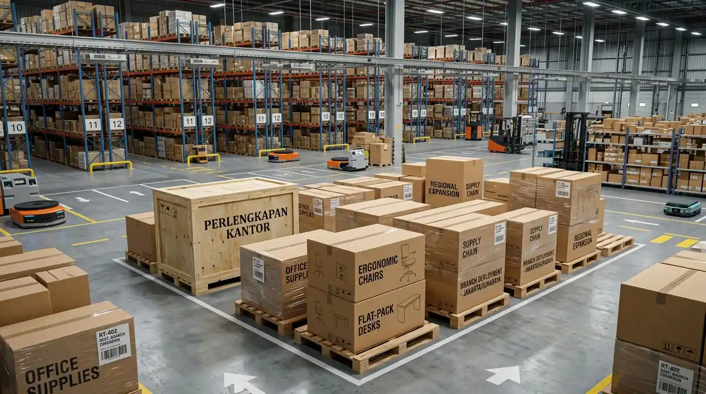

Ekspansi bisnis melalui pembukaan kantor cabang baru di luar kota menuntut perencanaan operasional yang presisi, terutama pada sektor pengadaan sarana kerja dan infrastruktur kantor. Tanpa kerangka kerja standar (Standard Operating Procedure), proses pemenuhan unit meja, kursi, peralatan arsip, hingga konsumabel kantor berisiko mengalami keterlambatan pengiriman, pembengkakan biaya logistik, hingga ketidaksesuaian spesifikasi produk. Penerapan alur pengadaan yang terstruktur memastikan seluruh aset dipasok tepat waktu, selaras dengan identitas visual korporat, serta efisien dari segi alokasi anggaran. Kemitraan strategis dengan distributor perlengkapan kantor berskala nasional menjadi fondasi utama kelancaran pembukaan operasional kantor cabang baru Anda.
Mengapa SOP Pengadaan Kantor Cabang Baru Sangat Krusial Bagi Perusahaan?
Penerapan sop pengadaan kantor cabang baru secara terpusat meminimalisir risiko friksi operasional dan ketidaksesuaian alokasi dana belanja modal (CAPEX). Berdasarkan Indonesia Corporate Procurement Report 2025, sekitar 61% ekspansi cabang baru yang mengalami keterlambatan operasional disebabkan oleh buruknya koordinasi pengadaan barang dengan vendor lokal eceran yang terpecah. Di sisi lain, data Logistics & B2B Supply Chain Index 2025 menunjukkan bahwa konsolidasi pengadaan sarana kantor melalui satu penyedia tunggal terpercaya mampu menekan biaya pengiriman luar kota hingga 28% dibandingkan pembelian eceran terpisah.
Ketika perusahaan membuka cabang di luar area perkotaan utama, kendala seperti keterbatasan stok lokal, fluktuasi harga yang tidak standar, serta ketiadaan garansi purna jual sering kali menjadi hambatan besar. Melalui SOP yang baku, tim procurement pusat dapat mengontrol mutu produk, memantau riwayat pengiriman secara real-time, dan memastikan operasional hari pertama (Day-1 Operation) berjalan tanpa kendala teknis. Perlengkapan Kantor siap mendukung standardisasi ini dengan menghadirkan solusi pengadaan sarana kantor menyeluruh untuk seluruh wilayah Indonesia.
Bagaimana Tahapan Efektif dalam SOP Pengadaan Cabang Luar Kota?
Menyusun tahapan kerja yang terstruktur membantu manajer pengadaan dan HR facility manager mengontrol setiap lini pekerjaan sejak tahap perencanaan hingga penyerahan unit di lokasi:
- Identifikasi Kebutuhan & Luas Area Workstation: Hitung secara presisi jumlah staf yang akan menempati cabang baru, lalu sesuaikan dimensi furnitur dengan layout denah lantai ruangan.
- Penyusunan Checklist Barang Kantor Cabang Baru: Kelompokkan kebutuhan ke dalam kategori utama, seperti furnitur operasional (meja dan kursi), perangkat kearsipan, hingga konsumabel office stationery.
- Penetapan Estimasi Budget Maksimal: Tentukan batas atas belanja modal berdasarkan harga satuan terstandar yang disediakan oleh distributor resmi B2B.
- Penerbitan RFQ (Request for Quotation) Terpusat: Ajukan dokumen daftar kebutuhan kepada penyedia tunggal untuk memperoleh skema diskon grosir, transparansi ongkos kirim, dan kepastian masa garansi.
- Inspeksi Penerimaan & Instalasi di Lokasi (Serah Terima Aset): Lakukan verifikasi kondisi fisik barang di lokasi cabang sesuai Bill of Quantities (BoQ) sebelum menandatangani Berita Acara Serah Terima (BAST).
Apa Saja Item Wajib dalam Checklist Barang Kantor Cabang Baru?
Menyusun daftar inventaris secara mendetail mencegah adanya barang esensial yang terlewat, sehingga staf cabang dapat langsung bekerja secara efisien sejak hari pertama.

Pemeriksaan checklist barang kantor cabang baru sesuai estimasi budget pengadaan B2B untuk menjamin kelancaran operasional kerja.
Checklist barang kantor cabang baru idealnya dibagi menjadi tiga zona operasional utama:
- Zona Workstation Staf: Meja kerja modular, kursi staff ergonomis berpori jaring, mobile drawer / laci sorong kunci, serta peninggi monitor (monitor riser).
- Zona Dokumen & Kearsipan: Lemari arsip besi (filing cabinet), binder ordner berkas, mesin penghancur kertas (paper shredder), dan stempel legalitas cabang.
- Zona Konsumabel & Utility: Kertas HVS berbagai ukuran, alat tulis kantor esensial, papan tulis whiteboard presentasi, serta tempat sampah pemilah.
Mempercayakan seluruh item kebutuhan dalam satu checklist terintegrasi kepada Perlengkapan Kantor membebaskan tim Anda dari kerumitan mengurus puluhan faktur dari vendor yang berbeda-beda.
Sederhanakan pengadaan cabang baru Anda dengan jaringan distribusi terpercaya. Kirim RFQ Pengadaan Kantor ke Perlengkapan Kantor untuk mendapatkan penawaran terpadu dan konsultasi gratis!
Estimasi Budget dan Komparasi Paket Pengadaan Cabang Baru
Membuat kalkulasi anggaran awal yang akurat sangat tergantung pada skala kapasitas staf di lokasi cabang. Berikut adalah tabel acuan estimasi budget alokasi belanja untuk pengadaan sarana kantor:
| Kategori Cabang | Kapasitas Staf | Alokasi Furnitur Utama | Alokasi Filing & Peralatan | Estimasi Total Budget |
|---|---|---|---|---|
| Cabang Perwakilan (Micro) | 3 – 5 Orang | Rp 12.000.000 – Rp 18.000.000 | Rp 5.000.000 – Rp 8.000.000 | Rp 17.000.000 – Rp 26.000.000 |
| Cabang Operasional (Medium) | 6 – 15 Orang | Rp 25.000.000 – Rp 50.000.000 | Rp 12.000.000 – Rp 20.000.000 | Rp 37.000.000 – Rp 70.000.000 |
| Cabang Regional (Large) | 16 – 30+ Orang | Rp 60.000.000 – Rp 120.000.000 | Rp 25.000.000 – Rp 45.000.000 | Rp 85.000.000 – Rp 165.000.000+ |
*Catatan: Estimasi budget di atas telah memperhitungkan alokasi diskon volume B2B dan dapat disesuaikan dengan kebutuhan spesifik serta lokasi pengiriman cabang.
Bagaimana Cara Mengendalikan Risiko Keterlambatan Logistik Luar Kota?
Keterlambatan pengiriman barang ke lokasi cabang di luar kota kerap menjadi pemicu mundurnya jadwal peresmian kantor dan membengkaknya biaya sewa gedung:
- Pilih Mitra Logistik Berpengalaman B2B: Pastikan distributor memiliki armada kargo terintegrasi yang terbiasa menangani pengiriman barang muatan besar (bulk delivery).
- Gunakan Kemasan Standar Ekspedisi (Palletized Packaging): Setiap unit barang, terutama yang berbahan kaca atau komponen mekanis, wajib dilapisi bubble wrap tebal dan rangka kayu pelindung.
- Tentukan Buffer Time Pengiriman: Selalu alokasikan tenggat waktu pengiriman minimal 5–7 hari kerja sebelum jadwal diresmikannya kantor cabang baru.
Solusi Pengadaan Terpadu Luar Kota Bersama Perlengkapan Kantor
Sebagai mitra pengadaan fasilitas kantor tepercaya di Indonesia, Perlengkapan Kantor memahami penuh kompleksitas ekspansi bisnis ke berbagai area luar kota. Kami menyediakan layanan pengadaan B2B berbasis One-Stop Solution, mulai dari penyediaan produk berkualitas tinggi, manajemen logistik antar-pulau, hingga perakitan unit di tempat (on-site installation).
Setiap transaksi pengadaan bersama kami dijamin oleh kontrak kerja yang jelas, ketersediaan Faktur Pajak resmi, harga transparan tanpa biaya tersembunyi, serta garansi replace jika terdapat kerusakan akibat proses transit. Dengan dukungan account manager khusus, proses ekspansi kantor cabang Anda akan berjalan lebih cepat, efisien, dan terukur.
Kendalikan seluruh proses ekspansi kantor cabang Anda secara profesional. Kirim RFQ Pengadaan Kantor sekarang dan dapatkan skema harga grosir B2B khusus pengadaan luar kota!
Pertanyaan Populer Seputar SOP Pengadaan Cabang Baru (FAQ)
Kesimpulan Praktis
Menerapkan sop pengadaan kantor cabang baru yang sistematis merupakan kunci utama suksesnya ekspansi bisnis di luar kota. Dengan standardisasi produk, perencanaan checklist yang cermat, serta kontrol estimasi budget yang ketat, perusahaan dapat menghemat alokasi biaya operasional sekaligus memastikan kantor baru siap digunakan secara optimal.
Percayakan seluruh proses pasokan sarana dan prasarana kerja cabang baru perusahaan Anda kepada ahli pengadaan yang tepercaya dan berpengalaman. Wujudkan pembentukan kantor cabang baru yang cepat, rapi, dan efisien. Segera Kirim RFQ Pengadaan Kantor hanya ke Perlengkapan Kantor!

Penulis: Tim Spesialis Perlengkapan Kantor
Divisi Corporate Procurement & Facility Logistics di Perlengkapan Kantor. Berpengalaman mendampingi ratusan ekspansi kantor cabang BUMN, multinasional, dan startup di seluruh Indonesia.